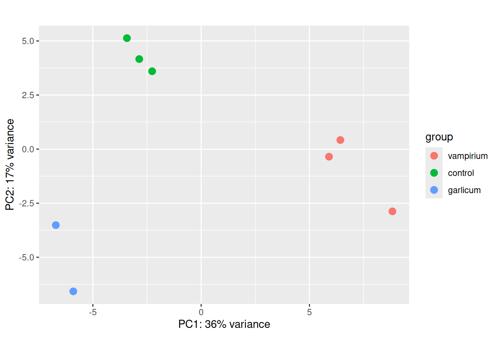
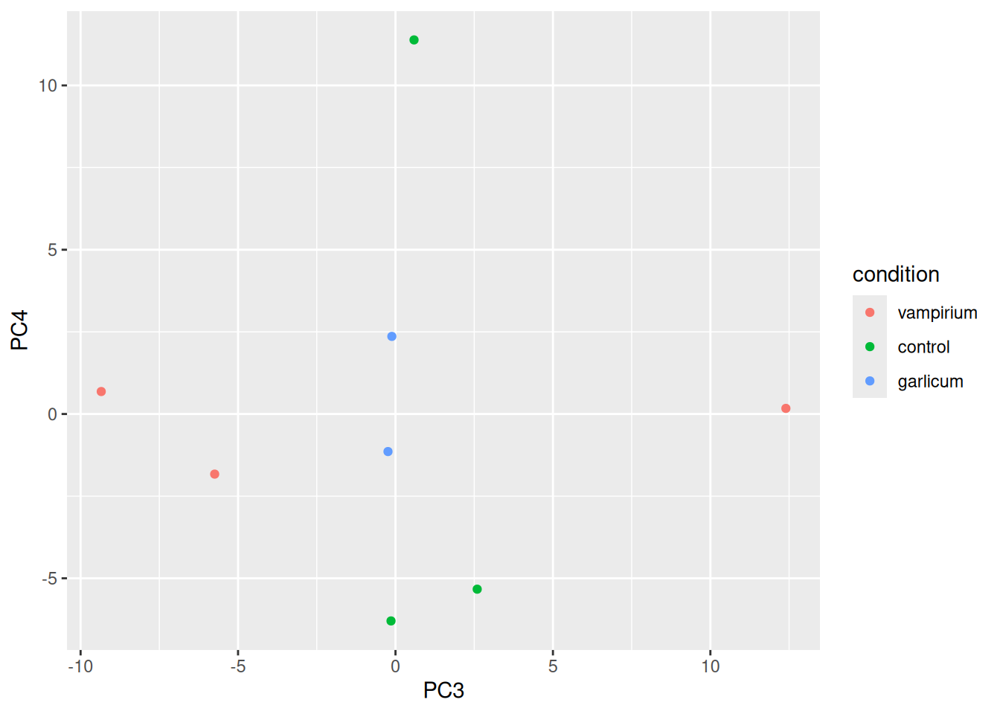
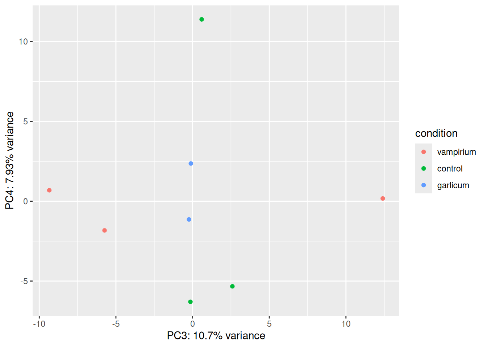
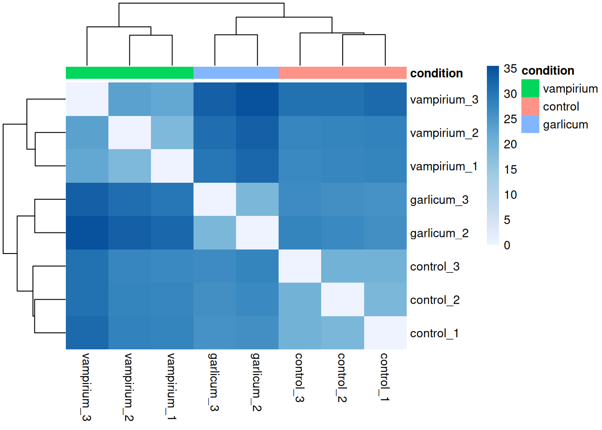
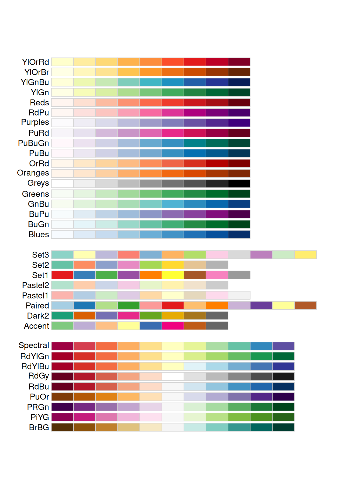

### Transform counts for data visualization
rld <- rlog(dds, blind=TRUE)
## Or using the vst for > 20 samples
#vsd <- vst(dds, blind = TRUE)Exploratory analysis with DESeq2
Approximate time: 40 minutes
Learning Objectives
- Recognize the importance of methods for count data transformation
- Describe the PCA (principal component analysis) technique
- Interpret different examples of PCA plots
- Evaluate sample quality using PCA and hierarchical clustering
Vampirium quality assessment and exploratory analysis using DESeq2
Now that we have a good understanding of the QC steps normally employed for RNA-seq, let’s implement them for the Vampirium dataset we are going to be working with.
Transform normalized counts for the Vampirium dataset
To improve the distances/clustering for the PCA and hierarchical clustering visualization methods, we need to moderate the variance across the mean by applying the rlog transformation to the normalized counts.
The blind=TRUE argument is to make sure that the rlog() function does not take our sample groups into account - i.e. does the transformation in an unbiased manner. When performing quality assessment, it is important to include this option.
The rlog() function returns a DESeqTransform object, another type of DESeq-specific object. The reason you don’t just get a matrix of transformed values is because all of the parameters (i.e. size factors) that went into computing the rlog transform are stored in that object. We use this object to plot the PCA and hierarchical clustering figures for quality assessment.
Principal component analysis (PCA) for the Vampirium dataset
We are now ready for the QC steps, let’s start with PCA!
DESeq2 has a built-in function for generating PCA plots using ggplot2 under the hood. In addition, it takes the rlog object as an input directly, hence saving us the trouble of extracting the relevant information from it.
The function plotPCA() requires two arguments as input: a DESeqTransform object and the “intgroup” (interesting group), i.e. the name of the column in our metadata that has information about the experimental sample groups.
### Plot PCA
plotPCA(rld, intgroup="condition")
Exercise 1:
By default plotPCA() uses the top 500 most variable genes. You can change this by adding the ntop= argument and specifying how many of the genes you want the function to consider. For example, try 1000 genes. Did the plot change a lot?
Your code here:
#your code hereExercise 2:
- What does the above plot tell you about the similarity of samples?
- Does it fit the expectation from the experimental design?
- What do you think the %variance information (in the axes titles) tell you about the data in the context of the PCA?
Extra
The plotPCA() function will only return the values for PC1 and PC2. If you would like to explore the additional PCs in your data or if you would like to identify genes that contribute most to the PCs, you can use the prcomp() function. For example, to plot any of the PCs we could run the following code:
# Input is a matrix of log transformed values
rld_mat <- assay(rld) # extract rlog count matrix
pca <- prcomp(t(rld_mat)) # perform PCA on the transposed (t) matrix of data To see what the PCA object contains we can use again the attributes() function:
attributes(pca)$names
[1] "sdev" "rotation" "center" "scale" "x"
$class
[1] "prcomp"You can check the ?prcomp() for more information. The most important variables are: - sdev: standard deviation explained by each PC. - rotation: contribution of each gene to each PC. - x: PC values for each sample (we use this values for our plots)
We can create a new object that contains all our metadata information and the PC values:
df <- cbind(meta, pca$x) # Create data frame with metadata and PC3 and PC4 values for input to ggplot# ggplot with info for all PCAs
ggplot(df) + geom_point(aes(x=PC3, y=PC4, color = condition))
If you want to add PC variation information to the plot we can fetch it using the summary() function and take the second row:
summary(pca)Importance of components:
PC1 PC2 PC3 PC4 PC5 PC6 PC7
Standard deviation 12.2938 8.9055 6.3378 5.45687 5.21247 4.93050 4.85458
Proportion of Variance 0.4026 0.2112 0.1070 0.07931 0.07237 0.06475 0.06277
Cumulative Proportion 0.4026 0.6138 0.7208 0.80011 0.87248 0.93723 1.00000
PC8
Standard deviation 6.373e-14
Proportion of Variance 0.000e+00
Cumulative Proportion 1.000e+00pca_var <- summary(pca)$importance[2,] # second row is stored in the object "importance"
pca_var <- round(pca_var * 100, digits = 2) # make it percentage and round to 2 digitsFinally, we can add it to our plot:
ggplot(df) + geom_point(aes(x=PC3, y=PC4, color = condition)) +
xlab(paste0("PC3: ",pca_var["PC3"], "% variance")) +
ylab(paste0("PC4: ",pca_var["PC4"], "% variance")) 
Hierarchical Clustering for the Vampirium dataset
There is no built-in function in DESeq2 for plotting the heatmap for displaying the pairwise correlation or distances between all the samples and the hierarchical clustering information; we will use the pheatmap() function from the pheatmap package. This function cannot use the DESeqTransform object as input, but requires a matrix or dataframe. So, the first thing to do is retrieve that information from the rld object using a function called assay().
### Extract the rlog matrix from the object
rld_mat <- assay(rld) Next, we need to compute the distances values for all the samples. We can do this using the dist function:
sampleDists <- dist(t(rld_mat)) #distances are computed by rows, so we need to transpose (t) the matrix
sampleDistMatrix <- as.matrix(sampleDists)Let’s take a look at the column and row names of the correlation matrix.
## check the output of sampleDistMatrix, make note of the row names and column names
head(sampleDistMatrix) control_3 control_2 control_1 vampirium_3 vampirium_2 vampirium_1
control_3 0.00000 20.14090 20.12224 30.72807 27.38707 27.31294
control_2 20.14090 0.00000 19.13724 30.60010 27.76047 27.45923
control_1 20.12224 19.13724 0.00000 31.70396 28.23922 27.71067
vampirium_3 30.72807 30.60010 31.70396 0.00000 23.39985 22.08134
vampirium_2 27.38707 27.76047 28.23922 23.39985 0.00000 18.74102
vampirium_1 27.31294 27.45923 27.71067 22.08134 18.74102 0.00000
garlicum_3 garlicum_2
control_3 26.85721 27.95291
control_2 26.01064 27.13026
control_1 25.89459 26.02687
vampirium_3 33.26245 35.50412
vampirium_2 31.02035 33.25194
vampirium_1 30.06386 32.12089head(meta)You will notice that they match the names we have given our samples in the metadata data frame we started with. It is important that these match, so we can use the annotation argument below to plot a color block across the top. This block enables easy visualization of the hierarchical clustering.
Now, let’s plot the heatmap!
### Load pheatmap package
library(pheatmap)
pheatmap(sampleDistMatrix, annotation_col = meta %>% column_to_rownames("sample") %>%
dplyr::select(condition)) # we only want to use the condition column as an annotation
When you plot using pheatmap() the hierarchical clustering information is used to place similar samples together and this information is represented by the tree structure along the axes. The annotation argument accepts a dataframe as input, in our case it is the meta data frame.
Exercise 2
Instead of using distances between expression patterns, check the Pearson correlation between samples using cor(). Use your rlog count matrix as an input.
Your code here:
#your code hereExtra
There are many arguments and options for the pheatmap() function. You could, for example, change the color scale used, remove the dendograms, avoid clustering or even scale the values per row or per column.
library(RColorBrewer)
heat.colors <- brewer.pal(6, "Blues") # Colors from the RColorBrewer package (only 6)
heat.colors <- colorRampPalette(heat.colors)(100) # Interpolate 100 colorspheatmap(sampleDistMatrix, annotation = meta %>% column_to_rownames("sample") %>% dplyr::select("condition"),
color = heat.colors, border_color=NA, fontsize = 10,
fontsize_row = 10, height=20)
You can check all the colors that RColorBrewer offers by using the following command: display.brewer.all()
display.brewer.all()